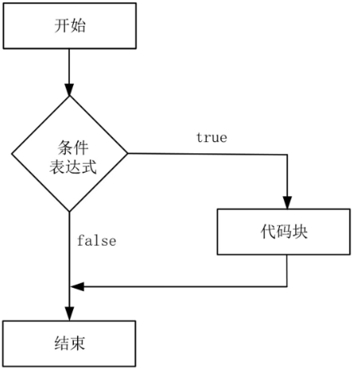
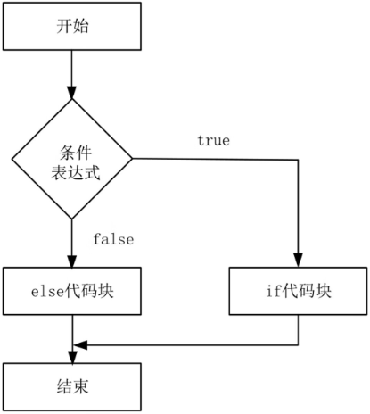

首页 > 编程笔记
Go if else分支语句的用法
在Go语言中，if 语句主要用于条件判断。if 语句还有两个分支结构：if-else 语句和 else-if 语句。
if 语句是所有流程控制语句中最常用的，这个语句可以根据条件表达式来执行代码块中的两个分支，表达式只能返回布尔类型，即 true 或 false：
在Go语言中，关键字 if 是用于测试某个条件（布尔型或逻辑型）的语句，如果该条件成立，则会执行 if 后由大括号
if 语句的语法格式如下：
例如，使用 if 语句判断一个变量的大小。
a 小于 30
a 的值为：20
在以上代码中，由于 a 的值为 20，小于 30，表达式返回 true，因此结果返回“a小于30”的信息。
如果把 a 的值调整为 50，那么程序判断语句将返回 false，判断语句不会输出任何信息提示。为了显示出 false 的返回情况，就需要使用到 if-else 语句。
if 语句如果存在第二个分支，则可以在代码中添加 else 关键字及另一代码块，这个代码块中的代码只有在条件不满足时才会执行，if 和 else 后的两个代码块是相互独立的分支，只能执行其中一个。
if-else 语句的语法格式如下：
if-else 语句的执行流程如图2所示。
例如，使用 if-else 语句判断一个变量的大小。
a 不小于 30
a 的值为：50
在以上代码中，由于 a 的值为 50，不小于 30，表达式返回 false，因此结果返回“a不小于30”的信息。如果想判断 a 的值是否小于 30 且大于 20，那么当前语句就不能满足要求了。
在 if-else 语句中修改如下：
a 小于 30
a 大于 20
a 的值为：25
在以上代码中准确判断了 a 的值，但是嵌套了 if-else 语句，这种情况增加了代码逻辑的复杂性，可能会影响结果的准确性，因此就有了 else-if 语句。
a 大于 10
a 小于 20
a 的值为：15
Go else-if 语句还可以连续使用多个 else if 关键字，例如，判断一个数字是否大于 15 或小于 30 且不等于 20。
a 大于 15
a 小于 30
a 不等于 20
a 的值为：28
在以上代码中使用了两个 else-if 语句，通过修改 a 的值来感受这个语法的特点，例如，修改 a 的值为 28，则返回“a等于28”的信息。
2) Go语言规定，与 if 匹配的
同样，与 else 匹配的
3) if 后面可以带一个简单的初始化语句，并以分号进行分隔，该简单语句声明的变量的作用域是整个 if 语句块，包括后面的 else if 和 else 分支。
4) Go语言没有条件运算符（a>b?a:b），符合Go语言的设计理念，只提供一种方法做事情。
5) if 分支语句如果遇到 return，则直接返回。
Go if 语句
if 语句由条件表达式后紧跟一个或多个语句组成。if 语句是所有流程控制语句中最常用的，这个语句可以根据条件表达式来执行代码块中的两个分支，表达式只能返回布尔类型，即 true 或 false：
- 当返回值为true时，执行if后面的代码块；
- 当返回值为false时，执行else后面的代码块。
在Go语言中，关键字 if 是用于测试某个条件（布尔型或逻辑型）的语句，如果该条件成立，则会执行 if 后由大括号
{}括起来的代码块，否则就忽略该代码块继续执行后续的代码。if 语句的语法格式如下：
if (条件表达式) //如果条件表达式的值为真,则执行代码块,否则忽略该代码块
{
代码块
}
if 语句的执行流程如图1所示。

图1：Go if 语句的执行流程
图1：Go if 语句的执行流程
例如，使用 if 语句判断一个变量的大小。
package main
import "fmt"
func main() {
/*定义局部变量*/
var a int = 20
/*使用 if 语句判断布尔表达式*/
if a < 30 {
/*如果条件为true,则执行以下语句*/
fmt.Printf("a 小于 30\n" )
}
fmt.Printf("a 的值为 : %d\n", a)
}
运行结果：a 小于 30
a 的值为：20
在以上代码中，由于 a 的值为 20，小于 30，表达式返回 true，因此结果返回“a小于30”的信息。
如果把 a 的值调整为 50，那么程序判断语句将返回 false，判断语句不会输出任何信息提示。为了显示出 false 的返回情况，就需要使用到 if-else 语句。
Go if-else 语句
if 语句后可以使用可选的 else 语句，else 语句中的表达式在条件表达式为 false 时执行。if 语句如果存在第二个分支，则可以在代码中添加 else 关键字及另一代码块，这个代码块中的代码只有在条件不满足时才会执行，if 和 else 后的两个代码块是相互独立的分支，只能执行其中一个。
if-else 语句的语法格式如下：
if (条件表达式) //如果条件表达式的值为真,则执行代码块1,否则执行代码块2
{
代码块1
}
else
{
代码块2
}
if 语句在条件表达式为 true 时，执行其后紧跟的代码块，如果为 false，则执行 else 后紧跟的代码块。if-else 语句的执行流程如图2所示。

图2：Go if-else 语句的执行流程
图2：Go if-else 语句的执行流程
例如，使用 if-else 语句判断一个变量的大小。
package main
import "fmt"
func main() {
/*局部变量定义*/
var a int = 50;
/*判断布尔表达式*/
if a < 30 {
/*如果条件为true,则执行以下语句*/
fmt.Printf("a 小于 30\n" );
} else {
/*如果条件为false,则执行以下语句*/
fmt.Printf("a 不小于 30\n" );
}
fmt.Printf("a 的值为 : %d\n", a);
}
运行结果：a 不小于 30
a 的值为：50
在以上代码中，由于 a 的值为 50，不小于 30，表达式返回 false，因此结果返回“a不小于30”的信息。如果想判断 a 的值是否小于 30 且大于 20，那么当前语句就不能满足要求了。
在 if-else 语句中修改如下：
package main
import "fmt"
func main() {
/*局部变量定义*/
var a int = 25
/*判断布尔表达式*/
if a < 30 {
/*如果条件为 true,则执行以下语句*/
fmt.Printf("a 小于 30\n")
if a > 20 {//判断a是否大于20
fmt.Printf("a 大于 20\n")
} else {
fmt.Printf("a 小于 20\n")
}
} else {
/*如果条件为 false,则执行以下语句*/
fmt.Printf("a 不小于 30\n")
}
fmt.Printf("a 的值为 : %d\n", a)
}
运行结果：a 小于 30
a 大于 20
a 的值为：25
在以上代码中准确判断了 a 的值，但是嵌套了 if-else 语句，这种情况增加了代码逻辑的复杂性，可能会影响结果的准确性，因此就有了 else-if 语句。
Go else-if 语句
else-if 语句解决了多重判断的问题，例如：
package main
import "fmt"
func main() {
/*局部变量定义*/
var a int = 15
if a > 20 { //判断a是否大于20
fmt.Printf("a 大于 20\n")
} else if a < 10 {
fmt.Printf("a 小于 10\n")
} else {
/*如果条件为 false,则执行以下语句*/
fmt.Printf("a 大于 10\n")
fmt.Printf("a 小于 20\n")
}
fmt.Printf("a 的值为 : %d\n", a)
}
运行结果：a 大于 10
a 小于 20
a 的值为：15
Go else-if 语句还可以连续使用多个 else if 关键字，例如，判断一个数字是否大于 15 或小于 30 且不等于 20。
package main
import "fmt"
func main() {
/*局部变量定义*/
var a int = 28
if a > 30 { //判断a是否大于30
fmt.Printf("a 大于 30\n")
} else if a < 15 {
fmt.Printf("a 小于 15\n")
} else if a == 20 {
fmt.Printf("a 等于20\n")
} else {
/*如果条件为 false,则执行以下语句*/
fmt.Printf("a 大于 15\n")
fmt.Printf("a 小于 30\n")
fmt.Printf("a 不等于 20\n")
}
fmt.Printf("a 的值为 : %d\n", a)
}
运行结果：a 大于 15
a 小于 30
a 不等于 20
a 的值为：28
在以上代码中使用了两个 else-if 语句，通过修改 a 的值来感受这个语法的特点，例如，修改 a 的值为 28，则返回“a等于28”的信息。
if else 语句的注意事项
1) if 后面的条件判断子句不需要使用小括号括起来，例如，if a > 30。2) Go语言规定，与 if 匹配的
{必须与 if 和表达式放在同一行，如果尝试将{放在其他位置，将会出发编译错误。同样，与 else 匹配的
{也必须与 else 在同一行，else 也必须与上一个 if 或 else if 的右边的大括号在一行。3) if 后面可以带一个简单的初始化语句，并以分号进行分隔，该简单语句声明的变量的作用域是整个 if 语句块，包括后面的 else if 和 else 分支。
4) Go语言没有条件运算符（a>b?a:b），符合Go语言的设计理念，只提供一种方法做事情。
5) if 分支语句如果遇到 return，则直接返回。
关注公众号「站长严长生」，在手机上阅读所有教程，随时随地都能学习。内含一款搜索神器，免费下载全网书籍和视频。

微信扫码关注公众号